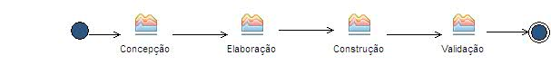

Delivery Process: Processo Acadêmico Simplificado - PAS
O Processo Acadêmico Simplificado - PAS - é um processo iterativo e incremental baseado nas práticas do Processo Unificado e da modelagem ágil.
Description
Work Breakdown Structure
Team Allocation
Work Product Usage
Workflow

Work Breakdown